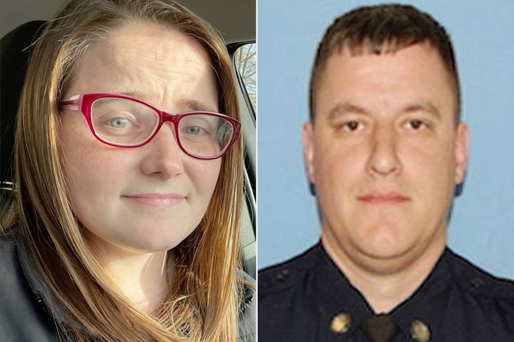

October 08, 2026
TRIAL WATCH: Ex-Stoughton Detective's Federal Murder Trial Nears Start as Jury Selection Enters Day 3


"Headline card: The Night Desk; Sandra Birchmore and Matthew Farwell photos: Stoughton Police Department via AP; Sandra Birchmore 2021 photo via her Facebook account"
Where things stand
Jury selection in the federal murder trial of former Stoughton police detective Matthew Farwell, 40, entered its third day Thursday, October 8, at the John J. Moakley U.S. Courthouse in Boston.
More than 400 prospective jurors reported Tuesday and completed written questionnaires. On Thursday, about 80 were brought back for individual questioning at a long conference table — prosecutors on one side, Farwell and his defense team on the other. Around 60 were questioned; roughly 40 remain eligible and report back Friday for the final stage of selection.
Chief U.S. District Judge Denise J. Casper will seat 16 jurors total: 12 seated and 4 alternates. Opening statements are still expected to move forward Friday, and Casper has estimated the trial could run about five weeks, into the second week of November.
What he's charged with
Farwell faces two federal counts: killing a witness or victim, and causing the death of an unborn child. Prosecutors allege he killed Sandra Birchmore, 23, who was eight to ten weeks pregnant with a baby boy, on or about February 1, 2021 — then used his police knowledge to stage her Canton apartment to look as though she had died by suicide.
Birchmore was found dead February 4, 2021, seated on the floor with a luggage strap looped around her neck and tied to a closet doorknob. At the time, state investigators with the Norfolk County District Attorney's Office and the Massachusetts medical examiner concluded she died by suicide.
The alleged motive
Prosecutors say Farwell began sexually exploiting Birchmore when she was 15, after meeting her through the Stoughton Police Department's Explorers youth program, where he served as an instructor. They allege the relationship continued for years — and that he killed her to prevent her from disclosing the abuse.
Investigators claim DNA evidence now ties Farwell to the apartment and to the duffel bag strap allegedly used to choke her. In a significant development earlier this year, the Office of the State Medical Examiner walked back its suicide ruling, changing Birchmore's manner of death from "suicide" to "undetermined" and the cause from "asphyxia by hanging" to "asphyxia."
Farwell has pleaded not guilty. His attorneys contend Birchmore died by suicide and have pointed to her history of suicide attempts. DNA testing concluded Farwell was not the father of the unborn child.
What to watch
The trial is one of the highest-profile police-misconduct murder cases in Massachusetts in years, drawing comparisons to the Karen Read case — which played out in the same Canton jurisdiction. Federal prosecutors say Birchmore had been planning for motherhood in the weeks before her death: prenatal appointments, baby supplies, a planned Valentine's Day pregnancy announcement.
This is a developing story. The Night Desk will update this article as the trial moves forward.
Source: The Enterprise (Gannett) — read the original report
← Back to latest stories